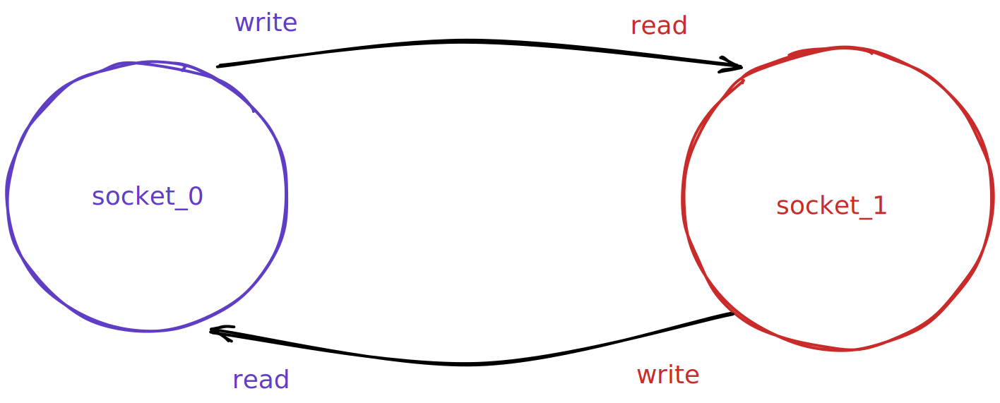
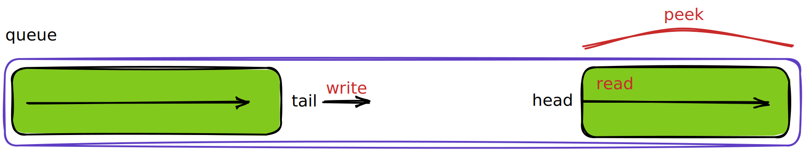
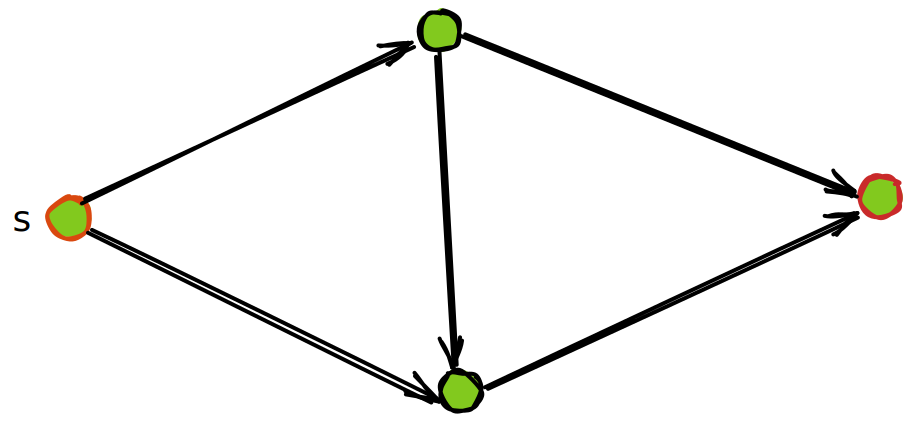
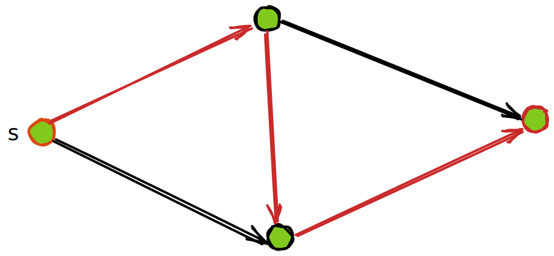
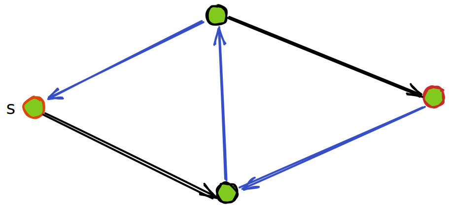
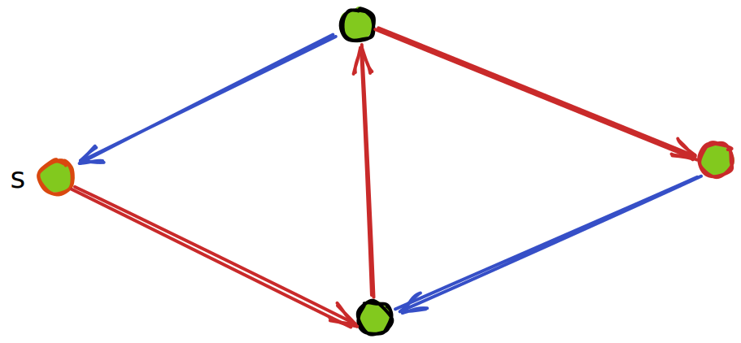
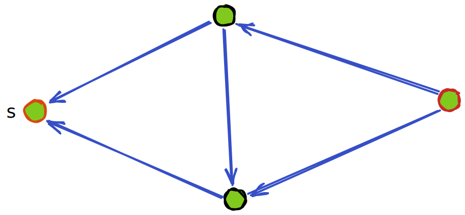
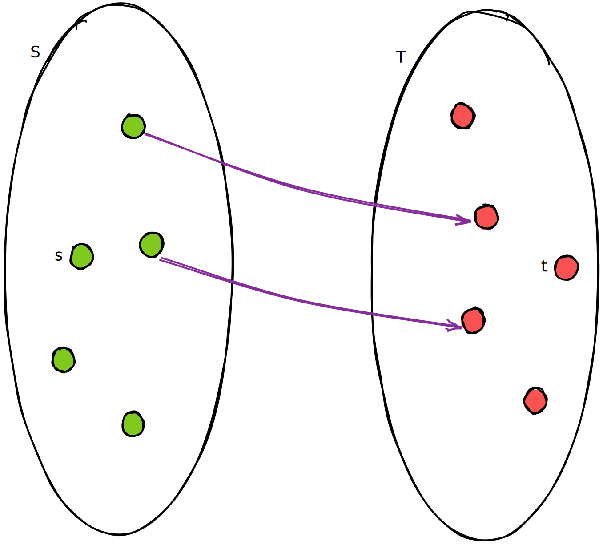
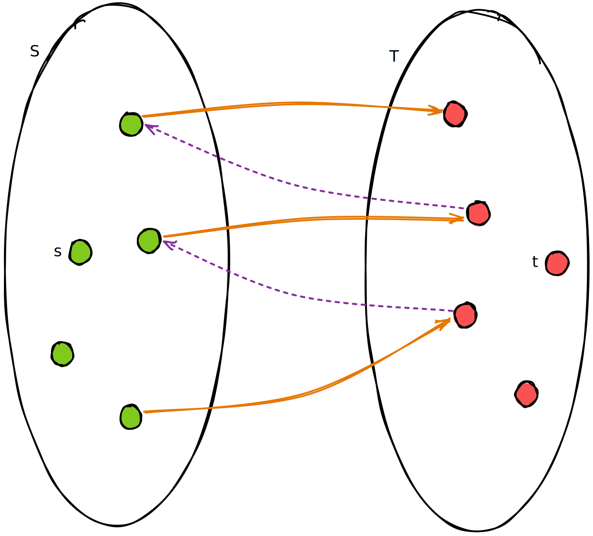
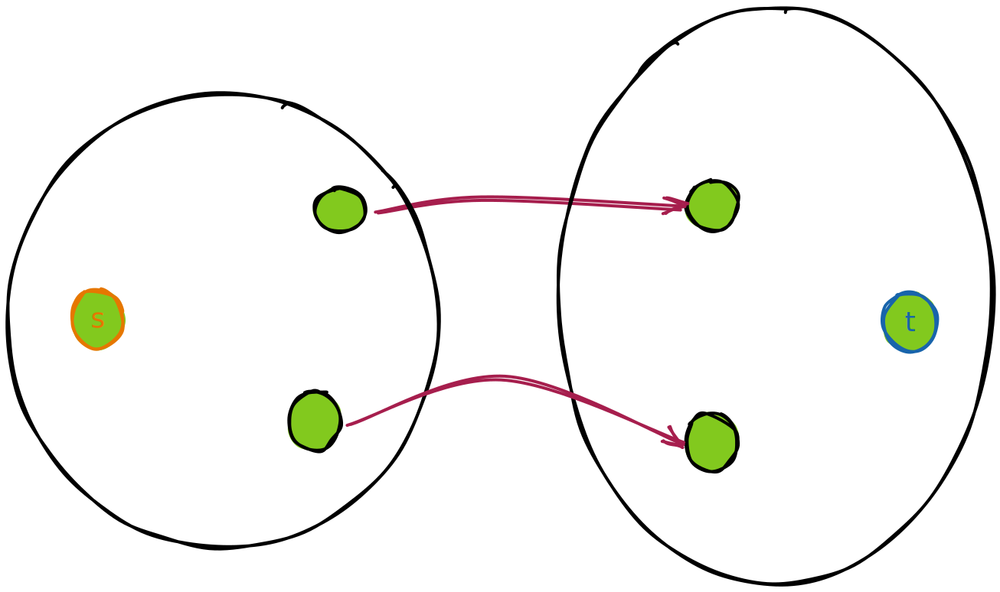

stealed foreword
The first laboratory session was devoted to finding out that developer feels slippery and that fixer smells awful.
试试 mdbook
github pages 好像静态网页都能托管。
呼呼呼
学习，学个屁。真如漏勺兜水，前面学后面忘。
行这逆水行舟之事挫人心志，左看右看不知深处，打道回府舍不得一身长衫，浑浑厄厄竟然不知岁月，转头一看什么也没有留下。
为了学习好吗，对它使用 blog 吧。
哗啦哗啦
-
mdbook默认的公式是mathjax。这个blog感觉尽量不要把数学的东西丢进来，但等下还是看看preprocess，把mathjax换成katex，以及 -
markdown看看有没有CICD支持的lint。 -
racket语法高亮。
TLS
One cannot build a beautiful and functional bridge without a knowledge of steel and dirt and considerable mathematical technique for using this knowledge to compute the properties of structures.
开始研习 the little schemer，记录学习过程中的想法
据 preface 所言，此书旨在 teaching reader thinking recursively，为了达成这一目的，作者才选择了 scheme 作为教具。
此书的写作目的并非让读者熟练掌握 scheme 本身，作者明确指出书中只用到了 scheme 的一个小子集。
在 guideline 中，作者建议 Read carefully，并且 Do not read the book in fewer than three sittings。前面章节的理解会影响后面的阅读，请读者保证顺序理解所述内容。
若在读书过程中设立一个明确的目标，大概就是理解并自行推导出 y-combinator，理解其思想。
Racket
racket 是 lisp 的一种方言，是 scheme 的一个 descendant。
没了解过 scheme，不太清楚具体区别。不过据说 racket 能直接用来看 TLS，使用 DrRacket，并选择 racket 原生语言即可：
#lang racket
cons and list
atom
序言中定义了 atom?:
(define atom?
(lambda (x)
(and (not (pair? x)) (not (null? x)))))
即，不是 pair，也不是 null 的东西就叫 atom
> (atom? null)
#f
> (atom? '(1 2 3))
#f
> (atom? #f)
#t
> (atom? 1)
#t
> (atom? "abc")
#t
怀疑这是不是书中自造的概念，我在 The Racket Guide 里没看到这个说法
pair, list 和 s-expression
reference 中提到：
In general, the result of cons is a pair. The more traditional name for the cons? function is pair?, and we’ll use the traditional name from now on.
也就是说 cons 是 pair 的构造子，(cons a b) 表示把 a 和 b 连在一起，构成一个 pair。
这一点与书中不一样。
TLS中并没有pair这一回事，而是只有list，并将cons视为list的构造子，其第二个参数必须也是一个list。我这里还是采用
racket实际的情况。对此，书中提到一笔：
In practice,
(cons a b)works for all valuesaandb, and
(car (cons a b)) = a,(cdr (cons a b)} = b
利用 cons，我们构造出 list 和 s-expression，按我理解，二者是递归定义的，以 CFG 写出来大概像这样:
S-expression =
atom |
list
list =
null |
(cons S-expression list)
list
- 要么是
null - 要么是一个特殊的
pair。特殊在于该pair的第二个部分一定是一个list。由此可知，list必有类似以下的结构：
(cons a (cons b (cons c (cons d null))))
一个例子是
> (cons null null)
'(())
racket 中，null 也可以写作 '()。单引号是一个函数 quote 的简写
值得注意，(cons a b) 直接将 a, b 组成一个 pair，这不等于 (list a b)：
> (cons 1 2)
'(1 . 2)
> (cons 1 '(2))
'(1 2)
> (list 1 2)
'(1 2)
> (list? (cons 1 2))
#f
> (pair? (cons 1 2))
#t
> (pair? (list 1 2))
# t
'(a b) 表示一个 list，而 '(a . b) 表示一个 pair。应该将前者看作后者的一种简写，'(a b) 写全了应该是 '(a . (b . ()))
quote
还需理解
datum。quote是否与其数据引用有关。
'a = (quote a)
'(a b c) = (list 'a 'b 'c)
在 REPL 里测试一下：
> '#t
#t
> '1
1
> '"abc"
"abc"
> '()
'()
> (list)
'()
> 'fdasfs
'fdasfs
一个层层展开的例子：
''(1)
-> (quote '(1))
-> (quote (quote (list 1)))
> (car ''(1))
'quote
> (cdr ''(1))
'((1))
分析一下，首先，要理解 (car ''(1)) 得到 'quote ，只需要理解 (quote (quote (list 1))) 是一个 list，它的左侧就是 quote
然后为了得到 (cdr ''(1))，这里把 list 看成 pair，即：
(quote (quote (list 1)))看作(quote . ((quote (list 1))))
再例如：
> (car '(define a 1))
'define
> (car '(+ 1 2))
'+
这里有个关于 null 的，有点特别的例子：
> null
'()
> '()
'()
> 'null
'null
> ''()
''()
> ''null
''null
null
书中指出，(quote ()) 是 null 的一种记号。
Lisp: Also
()and'().Scheme: Also
'()
实验一下:
> (quote ())
'()
> (null? (quote ()))
#t
嗯... () 能单独出现在 (quote ()) 里，这是否说明解释器以某种规则进行了特判。
> null
'()
> '()
'()
> (eq? null '())
#t
> (eq? 'null ''())
#f
有点神秘
stars
直到 *-functions 这一章，作者用上了他定义的所有东西。其迭代的对象有
(cons atom list)(cons number list)(cons s-expression list)
从这时起，每次 l 上的迭代都将判断三块地方
(null? l)，其为边界条件(atom? (car l))，若#t，则在(car l)上递归else，在(cdr l)上递归
例如 occur*
(define (occur* a l)
(cond
((null? l) 0)
((atom? (car l))
(cond
((eq? a (car l)) (add1 (occur* a (cdr l))))
(else (occur* a (cdr l)))))
(else (+ (occur* a (car l)) (occur* a (cdr l))))))
关于 leftmost
(define (leftmost l)
(cond
((null? l) null)
((atom? (car l)) (car l))
(else
(cond
((null? (leftmost (car l)))
(leftmost (cdr l)))
(else (leftmost (car l)))))))
实际上不需要去问 (cdr l)，因为此处左侧要么存在一个 atom，要么为 null，因而只需要考虑 (car l)
(define (leftmost1 l)
(cond
((null? l) null)
((atom? (car l)) (car l))
(else (leftmost1 (car l)))))
书上给的答案是
(define (leftmost2 l)
(cond
((atom? (car l)) (car l))
(else (leftmost2 (car l)))))
其假设 l 的左侧非 null
不清楚实际写代码，如果出了 null 怎么办。是 lisp 不容易出现这种问题吗？
eqlist?
首先，写了一个判断两个 list 是否相等的判定函数 eqlist?
(define (eqlist? l r)
(cond
((and (null? l) (null? r)) #t)
((or (null? l) (null? r)) #f)
(else
(cond
((and (atom? (car l)) (atom? (car r)))
(and (eq? (car l) (car r))
(eqlist? (cdr l) (cdr r))))
((or (atom? (car l)) (atom? (car r))) #f)
(else (and (eqlist? (car l) (car r))
(eqlist? (cdr l) (cdr r))))))))
然后，利用这个函数来写一个判定 s-expression 是否相等的函数 equal?
(define (equal l r)
(cond
((and (atom? l) (atom? r)) (eq? l r))
((or (atom? l) (atom? r)) #f)
(else (eqlist? l r))))
最后，用 equal? 倒回来替换掉 eqlist? 中 s-expression 的比较：
; modified `eqlist?`
(define (eqlist? l r)
(cond
((and (null? l) (null? r)) #t)
((or (null? l) (null? r)) #f)
(else (and (equal? (car l) (car r))
(eqlist? (cdr l) (cdr r))))))
; use this `equal?`
(define (equal? l r)
(cond
((and (atom? l) (atom? r)) (eq? l r))
((or (atom? l) (atom? r)) #f)
(else (eqlist? l r))))
这形成了一个相互递归调用，它的收敛性我不好说
只能勉强看出来，每次调用的过程中，参数都在变，而且应该是作为 list 变短了。这很符合书中所述的某一条 Commandment
shadow
这章没太看懂跟 shadow 有什么关系。
前面写了两个不同形式的算术表达式 parser，后面用另一种方式定义了自然数。
估计是想跟柏拉图的地穴寓言一样表达一下认知论的东西。
friends and relations
set
实现了一些集合操作，没什么好说的
pair
书中的 pair 定义为长为 2 的 list，与实际上不同。
fun
从函数映射的角度看这种...类似 map 的结构
定义 fun? 来判定映射, fullfun? 来判定双射。这不该是满射吗
应该说 map 天然就是满射，所以他这里只判断了单射，于是满射。
这章最后用两种办法判定双射，一种是直接看陪域有没有重复，也就是是不是单射。
问有没有另一种实现，给出的答案是判定其逆映射是不是映射。
嗯...
abstract and continuation
这章还没深入讲 lambda，只是将其作为抽象工具
continuation
Wiki:
In computer science, a continuation is an abstract representation of the control state of a computer program. A continuation implements (reifies) the program control state, i.e. the continuation is a data structure that represents the computational process at a given point in the process's execution; the created data structure can be accessed by the programming language, instead of being hidden in the runtime environment. Continuations are useful for encoding other control mechanisms in programming languages such as exceptions, generators, coroutines, and so on.
简单理解的话，感觉是把一个连续过程分解成从节点到节点，并且把节点以具体数据结构表示出来方便后续操作。有点像 linux 的文件系统，有点像流
multirember&co
我不好说，这部分有点烧脑
(define multirember&co
(lambda (a lat col)
(cond
((null? lat)
(col '() '()))
((eq? a (car lat))
(multirember&co a (cdr lat)
(lambda (newlat seen)
(col newlat (cons (car lat) seen)))))
(else
(multirember&co a (cdr lat)
(lambda (newlat seen)
(col (cons (car lat) newlat) seen)))))))
还是直接来个例子展开：
(define a-friend
(lambda (x y) (null? y)))
(multirember&co 2 '(1 2 3) a-friend)
=> (multirember&co 2 '(2 3)
(lambda (newlat seen)
(a-friend (cons 1 newlat) seen)))
=> (multirember&co 2 '(3)
(lambda (newlat' seen')
(lambda (newlat seen)
(a-friend (cons 1 newlat) seen))
newlat'
(cons 2 seen')))
=> (multirember&co 2 '()
(lambda (newlat'' seen'')
(lambda (newlat' seen')
(lambda (newlat seen)
(a-friend (cons 1 newlat) seen))
newlat'
(cons 2 seen'))
(cons 3 newlat'')
seen''))
=> ((lambda (newlat'' seen'')
(lambda (newlat' seen')
(lambda (newlat seen)
(a-friend (cons 1 newlat) seen))
newlat'
(cons 2 seen'))
(cons 3 newlat'')
seen'')
'()
'())
=> ((lambda (newlat' seen')
(lambda (newlat seen)
(a-friend (cons 1 newlat) seen))
newlat'
(cons 2 seen'))
(cons 3 '())
'()))
=> ((lambda (newlat seen)
(a-friend (cons 1 newlat) seen))
(cons 3 '())
(cons 2 '()))
=> (a-friend (cons 1 (cons 3 '()) (cons 2 '())))
=> #f
我不好说。
从这个展开来看，该函数会将 l 分成两个 list，前者是去掉 a 的 l，后者是所有的 a。
恕我直言，这个例子举得不是很好。一来这个函数的意义并不显然，二来难度曲线太大，手动模拟起来有些繁琐
已经解包
我觉得一个简单点的例子也许看的更清楚
写个函数 remove-a&co x l col 处理数字的 list，去掉 l 中的 x 并统计其个数
(define (remove-a&co x l col)
(cond
((null? l) (col '() 0))
((= x (car l))
(remove-a&co x (cdr l)
(lambda (newl cnt)
(col newl (add1 cnt)))))
(else (remove-a&co x (cdr l)
(lambda (newl cnt)
(col (cons (car l) newl) cnt))))))
; (remove-a&co 1 '(2 1 3 5 4 1)
; (lambda (l cnt) (list l cnt)))
; 直接用 `list` 替代这个 `lambda`
(remove-a&co 1 '(2 1 3 5 4 1) list)
; output:
; '((2 3 5 4) 2)
用一个简单点的例子写一下展开过程：
(remove-a&co 1 '(2 1 3) list)
->
(remove-a&co 1 '(1 3)
(lambda (newl cnt)
(list (cons 2 newl) cnt)))
->
(remove-a&co 1 '(3)
(lambda (newl' cnt')
(lambda (newl cnt)
(list (cons 2 newl) cnt))
newl'
(add1 cnt')))
->
(remove-a&co 1 '()
(lambda (newl'' cnt'')
(lamdba (newl' cnt')
(lambda (newl cnt)
(list (cons 2 newl) cnt))
newl'
(add1 cnt'))
(cons 3 newl'')
cnt''))
->
((lambda (newl'' cnt'')
(lamdba (newl' cnt')
(lambda (newl cnt)
(list (cons 2 newl) cnt))
newl'
(add1 cnt'))
(cons 3 newl'')
cnt'')
'()
0)
->
((lambda (newl' cnt')
(lambda (newl cnt)
(list (cons 2 newl) cnt))
newl'
(add1 cnt'))
(cons 3 '())
0)
->
((lambda (newl cnt)
(list (cons 2 newl) cnt))
(cons 3 '())
1)
->
(list (cons 2 (cons 3 '())) 1)
; which is
; '((2 3) 1)
lambda 嵌套 lambda，本该在过程式语言中最里侧的参数，在这里却是从最外侧传进去
数据传递以参数的形式进行，而没有解包的过程
evens-only*
该函数过滤掉 list 中的奇数，并统计去掉奇数的个数。
此习题与之前的差不多，不过要求从 list 的左右两边同时递归，并整合两边递归的结果。
(define (evens-only*&co l col)
(cond
((null? l) (col '() 0))
((atom? (car l))
(cond
((even? (car l))
(evens-only*&co (cdr l)
(lambda (newl cnt)
(col (cons (car l) newl) cnt))))
(else (evens-only*&co (cdr l)
(lambda (newl cnt)
(col newl (add1 cnt)))))))
(else (evens-only*&co (cdr l)
(lambda (newld cntd)
(evens-only*&co (car l)
(lambda (newla cnta)
(col (cons newla newld)
(+ cnta cntd)))))))))
(evens-only*&co '((9 1 2 8) 3 10 ((9 9) 7 6) 2) list)
; '(((2 8) 10 (() 6) 2) 6)
这个整合两侧的 lambda 很不好想。
之所以能写出这个 collector，我想是因为二叉树可以拉直成一条链
从回调函数的角度来理解，当 (lambda (newl cnt) ...) 定义出来时，就该假设其函数体定义里已经得到了 newl, cnt 的值，并且能够自由使用
嗯...
callback 可能是个不错的角度
halt
A's arguments, like shuffie's and looking's, do not necessarily decrease for the recursion.
第九章从几个函数出发简单介绍了一下停机和死循环。
它将最终会停机的函数称为 total，否则称为 partial。
以映射角度看函数，其居然有值无法到达陪域，因而称为 partial function
停机
这里给的证明是若函数 will-stop? 是 total 的，则：
(will-stop? (lambda (x)
(and (will-stop? last-try)
(eternity x))))
会得到矛盾的值。
《计算理论导引》那书上的停机问题好像是归约到图灵机 不可判定上去
递归
(lambda (x) (x x))
这个例子相当引人入胜，用 构造出 length 来计算 list 的长度：
尝试
(((lambda (mk-length)
(mk-length mk-length))
(lambda (length)
(lambda (l)
(cond
((null? l) 0)
(else (add1
(length (cdr l))))))))
'())
这个仅能计算一层，展开的话是：
->
(((lambda (length)
(lambda (l)
(cond
((null? l) 0)
(else (add1
(length (cdr l)))))))
(lambda (length)
(lambda (l)
(cond
((null? l) 0)
(else (add1
(length (cdr l))))))))
'())
->
((lambda (l)
(cond
((null? l) 0)
(else (add1
((lambda (length)
(lambda (l)
(cond
((null? l) 0)
(else (add1
(length (cdr l)))))))
(cdr l)))))) ; 本应传递一个 `length` 得到内部的 lambda，但传递了一个 `list`
'())
->
0
可以看出来尚不足以进行长度大于 0 的递归，因为到后面 length 没有正确的参数传进去。
修复
; 一步步改进
(((lambda (mk-length)
(mk-length mk-length))
(lambda (mk-length)
(lambda (l)
(cond
((null? l) 0)
(else (add1
((mk-length eternity)
(cdr l))))))))
'(1))
这里放了个 eternity 虚位以待，然而并不能改变它算不了非空 list 的事实：
->
(lambda (l)
(cond
((null? l) 0)
(else (add1
((lambda (mk-length)
(lambda (l)
(cond
((null? l) 0)
(else (add1
(mk-length (cdr l)))))))
eternity ; 充其量
(cdr l))))))
->
(lambda (l)
(cond
((null? l) 0)
(else (add1
((lambda (l')
(cond
((null? l') 0)
(else (add1
(eternity (cdr l))))))
(cdr l))))))
可以看出仅能递归两层。
接下来的任务是要用一个无穷递归来替换 eternity
无穷
为了让递归更明显，多写几层，无穷递归部分仍以 eternity 暂时代替
(lambda (l)
(cond
((null? l) 0)
(else (add1
(
(lambda (l)
(cond
((null? l) 0)
(else (add1
(
(lambda (l)
(cond
((null? l) 0)
(else (add1
(
(lambda (l)
(cond
((null? l) 0)
(else (add1
(
(lambda (l)
(cond
((null? l) 0)
(else (add1
(
(lambda (l)
(cond
((null? l) 0)
(else (add1
(
(lambda (l)
(cond
((null? l) 0)
(else (add1
(
(lambda (l)
(cond
((null? l) 0)
(else (add1
(
(lambda (l)
(cond
((null? l) 0)
(else (add1
(
(lambda (l)
(cond
((null? l) 0)
(else (add1
(
(lambda (l)
(cond
((null? l) 0)
(else (add1
(
(lambda (l)
(cond
((null? l) 0)
(else (add1
(
eternity
(cdr l))))))
(cdr l))))))
(cdr l))))))
(cdr l))))))
(cdr l))))))
(cdr l))))))
(cdr l))))))
(cdr l))))))
(cdr l))))))
(cdr l))))))
(cdr l))))))
(cdr l))))))
回过头看用 eternity 作为占位符的定义：
((lambda (mk-length)
(mk-length mk-length))
(lambda (mk-length)
(lambda (l)
(cond
((null? l) 0)
(else (add1
((mk-length eternity)
(cdr l))))))))
最后真正想要得到的是这一部分：
(lambda (l)
(cond
((null? l) 0)
(else (add1
((mk-length eternity)
(cdr l))))))
并且想要用这一个整体自身来替换 (mk-length eternity)
(lambda (l)
(cond
((null? l) 0)
(else (add1
((lambda (l)
(cond
((null? l) 0)
(else (add1
((mk-length eternity)
(cdr l)))))))
(cdr l))))))
换言之，我需要找到一个 eternity 满足
(mk-length eternity)
=
(lambda (l)
(cond
((null? l) 0)
(else (add1
((mk-length eternity)
(cdr l))))))
然而答案一开始就给出来了：
mk-length =
(lambda (mk-length)
(lambda (l)
(cond
((null? l) 0)
(else (add1
((mk-length eternity)
(cdr l))))))))
(mk-length mk-length) =
(lambda (l)
(cond
((null? l) 0)
(else (add1
((mk-length eternity)
(cdr l))))))))
于是只需要取 eternity 在这里等于 mk-length 即可
y(WIP)
TLS 里最终抽象出来的 Y 组合子长这样：
(define Y
(lambda (le)
((lambda (f) (f f))
(lambda (f)
(le (lambda (x) ((f f) x)))))))
里边稍微 apply 一层就跟经典的长得一样了：
(define Y
(lambda (le)
((lambda (f)
(le (lambda (x) ((f f) x))))
(lambda (f)
(le (lambda (x) ((f f) x)))))))
注意 (lambda (x) ((f f) x)) 其实就是 (f f)，这里为了惰性求值包了一层。
(define Y
(lambda (le)
((lambda (f)
(le (f f)))
(lambda (f)
(le (f f))))))
(define fact
(Y (lambda (fact1)
(lambda (n)
(cond
((= n 1) 1)
(else (* n (fact1 (sub1 n)))))))))
(fact 1)
(fact 2)
(fact 3)
(fact 5)
上述写法会无穷递归
type(WIP)
找找有没有办法查看表达式的类型。
或者说有没有官方支持的类型。
lazy(WIP)
在提取 length 里面 (mk-length mk-length) 的时候，利用 lambda 包一层实现了惰性，问：
(a a)
(lambda (x)
((a a) x))
有什么区别
在正常求值的时候应该看不出来区别，然而在作为参数传递的时候区别很大：
(define (do-x f x)
(f x))
(do-x (a a) 1)
；先求值 (a a)，再代入
(do-x (lambda (x)
((a a) x)) 1)
->
((lambda (x) ((a a) x)) 1)
->
((a a) 1)
questions
1. explain
> null
'()
> '()
'()
> (eq? null '())
#t
> (eq? 'null ''())
#f
2. why not same
> (eq? (quote 1) 1)
#t
> (eq? (quote a) a)
#f
> a
'()
> (define y a)
> (eq? (quote a) y)
#f
3. litteral?
能否写一个函数 car l，使其返回 l 的第一个字符？
不同于 car '(+ 2 3) 会得到 '+，能否有 car1 (+ 2 3) 得到 '+？
感觉不行，默认是按值传递的。
cs144
体验，学习，顺便考研
Spring 2023
每年都用一个 url，不知道将来还能不能找到这一年的存档
我的作业 repo

rust
本来是想用 rust 做的，课程要求的 cpp 风格很严格，不能有 new/delete，不能有裸指针，要积极加 const qualifier，不能 c 风格 cast，感觉不如直接用 rust
但底层代码以及，尤其是大量的测试代码，都是内嵌 cpp，一时让人不太想重写
还是先用 cpp 做完一遍再看看自己实现吧
peek
lab0 的第一部分是模仿 telnet 的操作，用它给的 socket 实现去进行一个 http 的 GET 请求

每个 socket 都在 write 对面和 read 自己，这与后面实现的 StreamBytes 类不同
ByteStream
第二部分
按照要求，这是一个单线程读写 Stream
也就是说，同时只有一个 writer 和一个 reader，而且 reader 读的还都是这个 writer 写的东西
这部分的主要问题在于 peek 函数
class Reader : public ByteStream
{
public:
std::string_view peek() const; // Peek at the next bytes in the buffer
函数是 const 的，说明没有副作用
返回值类型是 string_view，这是一个引用，相当于 slice
这说明该函数应该返回自己内部数据的一个引用类型
然而 string_view 要求引用的数据是 contiguous 的，也就是说在内存里要挨着
如果我来定义这个 peek 我估计会返回一个迭代器
总之这样就只能用 vector 了，并且用它模拟一个环
然而新问题在于 peek 需要能返回多长的内容
如果返回迭代器就没有这个问题，但返回 string_view 代表返回的内容长度需要我来决定
额
既然用 vector 模拟环了，那么能返回的长度上限就不是 capacity，而是从 head 到 vector.end() 之间，这样会导致 peek 不能保证 peek 到全部内容
...
然而这么写的话，测试都过了
不好说
在不 pop 的情况下，明显会出现有一部分内容永远无法 peek 到的情况

这应该不是一个好的定义
vector 模拟环
我计算下标的时候直接储存了单调递增的 head 和 tail，虽然是 uint64 类型，但终究是有限数
...
不好说，感觉问题很大
send and receive
此时才意识到这个 cs144 的 lab 其实没有那么底层，它的 send 实现甚至是让人填空 maybe_send()，然后外部轮询
有点琐碎，细枝末节太多，感觉一个月后什么也不记得。
fp
But what about creative composition? In order to be creative one must first gain control of the medium. One can not even begin to think about organizing a great photograph without having the skills to make it happen. In engineering, as in other creative arts, we must learn to do analysis to support our efforts in synthesis. One cannot build a beautiful and functional bridge without a knowledge of steel and dirt and considerable mathematical technique for using this knowledge to compute the properties of structures. Similarly, one cannot build a beautiful computer system without a deep understanding of how to "previsualize" the process generated by the procedures one writes.
当真不论哪个分叉都洋洋兮若江河，看不见顶摸不着底。
又是 lambda (WIP)
时隔良久，又忙里偷闲捡起来这东西。
看了这个博客，感觉是很好的补充，又把没理解的东西捡起来试图理解一下。（也是在翻了这作者的博文之后，让我起了好好记录 blog 的念头。
解方程
对于阶乘函数 fact
fact :: Int -> Int
fact n = case n of
1 -> 1
n -> n * fact (n-1)
有一个问题是如何只用 lambda 演算来实现 fact。具体一点来说，需要在 fact 内部不能调用 fact 自身。
一定程度上来说，这个要求是很直观的，因为在函数内部调用 fact 时，fact 自身还没定义完，怎么能够调用它呢？
在上面提到的博文当中，该文作者视函数定义为一个方程（可能也确实是），fact n 后的等号 =，就是数学意义上的等号，等号两侧完全等价。
如果能够利用这个方程，直接解出 fact 的定义，那么也就得到了 fact 的定义，绕过了先有鸡还是先有蛋的问题。
不动点
中学数学里其实很直接少见到递归的概念，偶尔出现也只是出于数列题目，浮光掠影。
然而哪怕只是很少出现，也有人已经把不动点的概念引入到各种高中教辅书里，配上标题：『不动点法求通项公式』，配图往往有两种，一种是一个螺旋状，另一种是折线。（折线的大概长这样）：
▲
│
│
│
│
│ xx
│ xx lll
│ xx lllllllll
│ xxx llllll
│ xxx lllllll
│ llllllll
│ lll▲─►l
│ lllll┌───┘x
│ lllll ▲xxx
│ lll┌────────►┘x
│ lllll ▲ xxx
│ lllll │ xx
│ lllll │ xx
lllllll▲─────────────►xx
lllllll│ │ xx
l │ │ xxx
│ │ xxx
│ │ xxx
│ │ xx y=x
│ │ xx
│ │xx
│ x│x
│ xx│
│ xx │
───────┘xx────┴───────────────────────────────────────────────────────────────►
xx
xx │
x │
xx │
基本意思就是不动点随着数列趋于极限，将逐步收敛到一个“稳定”的定值。或者干脆就等于这个值，同时因为这个点很“稳定”，于是它不再往外跑，从而得到了一个解。
那时候的理解很粗糙，没能真正弄懂极限与无穷。但是从利用这个工具解题的过程中还是获得了一点认知：谁掌握了不动点，谁就掌握了整个复杂过程的解。
方程例子
上面提到的 blog 里，作者引用的是函数定义上的不动点，即若 f(x)=x，则 x 是 f 的一个不动点。但我觉得数列的例子可能更像一个算法，于是多写了几笔。
言归正传。先从阶乘的例子来看 组合子怎么用。 组合子有这样的性质：
Y f = f Y f
也就是说 组合子是这样一个高阶函数：对于任意函数 ， 都是 的一个不动点
f (Y f) = (Y f) ; 函数作用是右结合的
定义对于阶乘函数 fact，定义一个 mk-fact:
(define (mk-fact fact')
(lambda (n)
(cond
((= n 1) 1)
(else (* n (fact' (sub1 n)))))))
我擦，看起来好麻烦，我换个随意点的写法：
mk-fact fact' =
if n = 1 => 1
else => n * (fact' (n-1)) ; 意思到了就行
然后直接将 mk-fact 给 组合子：
Y mk-fact = mk-fact (Y mk-fact)
接着传递 n 的时候，神奇的事情发生了:
(Y mk-fact) n
->
(mk-fact (Y mk-fact)) n
->
if n = 1 => 1
else => n * ((Y mk-fact) (n-1))
如果记 fact = Y mk-fact，则：
fact n =
if n = 1 => 1
else => n * (fact (n-1))
就此得到了阶乘函数 fact 家人们
Y-combinator
这就是 组合子
随便带入一个 ：
在 apply 一个具体 f 之后， 组合子变成了类似 组合子 的东西
此式永远能继续规约，不能规约到一个 normal form，因而说它是发散的（diverge)
如果 作用于自身，直接代入即有
回过头来
我们总结一下寻找 fact 的过程：
首先，先把 fact 写出来
fact = lambda n.
if n = 1 => 1
else => n * (fact (n-1))
抽象一下，就是写一个函数体里有 fact 递归调用的函数
fact = ... fact ... (1)
然后我们假设 fact 是某个函数 g 的不动点，即 g fact = fact
于是 fact = g fact (2)
于是 g fact = ... fact ... (3)，将 (2) 代回 (1) 即得
现在又已知 Y 组合子能求出任意函数的不动点，Y g = g Y g (4)
于是设 Y g = h，则 g h = h (5)，带入 (4) 即得
于是 g h = ... h ... (6)，将 h 作为 fact 代入 (3) 即得
于是 h = ... h ... 将 (5) 代回 (6)
于是解出了阶乘函数（递归函数）h
简直是魔术
Algorithm
算法精深，不可不学
minimum cut maximum flow
罗列定义
网络流
a flow network is a directed graph without multiple arcs, where each edge has a non-negative capacity function and each edge receives a flow.
if 2 nodes are distinguished -- one as the source , and the other as the sink , then is called a network flow.
流
， 表示从 到 的流。其应该满足
- Skew symmetric constraint. ，符号表示方向。这说明以邻接矩阵表示该图，则该矩阵斜对称
- Capacity constraint. An arc's flow cannot exceed its capacity. that is
以上两条定义了 pseudo-flow（不知道中文叫什么，伪流吗？）
再加上第三条约束则定义了 feasible flow, or just a flow:
- Flow conservation constraint, 流量守恒，除了 之外，其余节点都应满足输入等于输出
割
a Cut is the set
也就是割只关心从 到 的边，反方向的边是不关注的。
the capacity of an s-t cut is defined as the sum of the capacity of each edge in the cut-set.
残量网络
添加一个流之后网络剩下的容量视为一个新网络.
增广路径
即找一条从 到 的路径。
注意流函数 可以为负数， 说明 ，从 和 的约束中可以得到
这描述了 的合法范围，这个流可以看作在容量为 的管道中流动
每一条新的流量为 的增广路径 都不过是在 上每一条边加上一点流量 。只要 ，这条路径就是合法的。
Ford-Fulkerson 增广
我记得之前看的资料都把这个算法描述为增广的同时添加一条反向边
    jyy 老师的讲解中增加了一个图解：
 如果把流经一个割两侧的流量之和称为这个割的流量，那么对每一个割来说，每一次增广都一定会增大这个割的流量
-
问: 一个网络流的任意的割都有相同流量吗？
-
答: 是的。这是显然的，因为一个割把网络流图分割为两部分，而所有从 出发的流一定会流到 ，因此任意的割的流量都是相等的
虽然割的流量都是相等的，但是割的容量不一定是相等的，它取决于这个割有哪些边
每次增广后，都考虑残差网络的割
- 问: 若一个网络所有割的容量都大于 ，则一定可以增广吗？
- 答: 是的。这个过程很好想象，画图如下：
这个过程中有一个小细节：每一次连接割中两个点 ， 并不总是上一次连接进去的点
然而，可以归纳地保证，每一次新连进去的点 ，必有一条从 到 的增广路径
因而每一次新取的割中 里的每一个点都能从 出发走到
因此，在增广过程的最后连接 ，这保证了有一条从 到 的路径
最大流最小割定理
上面说明了若一个网络所有割的容量都大于 ，则一定可以增广
因此，通过不断的增广，最终会使得残差网络中的所有割当中，至少有一个割，容量为
显然，按此割来分割原网络流：
不可能有更大的流了，因而得到了最大流
同时，显然不可能有比它容量更小的割
总结
这么看下来好像也没有特别难以理解的地方，可能还是没有做题，检验不出来
如果能很自然地接受负数流，进而理解增广路径的过程，那么接下来就一路平坦了
tarjan
理解 tarjan 和缩点

tarjan 求强连通分量
理解这个过程的关键在于以 dfs 搜索树和搜索栈的视角来看待图遍历

众所周知 dfs 一个图的过程可以看作一棵树
- 问：如果树的一个节点 可以延申一条边到 ， 是 的祖先，说明什么
- 答：说明 和 位于同一个强连通分量
- 问：如果 不是 的祖先，说明什么
- 答：看情况， 能连 说明 和 在同一个强连通分量，而 能连 什么也说明不了
- 问：是什么造成了这种差异
- 答：因为 与 强连通， 是 的祖先
- 问：强连通说明什么
- 答： 和 强连通，从某种意义上可以将 与 看作同一个点
- 问：然后呢
- 答：所以 实际上可以看作就是 的祖先
- 问：有个问题，如果 dfs 的过程中，先发现 能连接 ，然后才发现 能连 ，可怎么办
- 答：这种情况不会出现
- 问：为什么
- 答：因为如果 和 在同一个强连通分量，那么当 还在搜索栈里的时候，一定有办法碰到
- 问：也就是说不可能出现 没发现 跟自己在同一个强连通分量里，反而要通过后续的 来间接发现的情况
- 答：对
- 问：所以当看到 能碰到 的时候直接无视就好了
- 答：对。因为如果 能碰到 ，但 又不在 的子树里，这说明 已经遍历完了。 这也说明 不在 的子树里。所以假如 能与 强连通，那么唯一的可能是他们都至少与 强连通， 是他们的公共祖先
- 问：所以即使 和 强连通，他们也有可能不在对方的子树里
- 答：对。可以想象这样一种情况： 和 强连通，但他们之间仅仅由一个节点 连接，没有其他互相到达的路径。如果此时 dfs 不巧以 作为二者的祖先来遍历，那么由于每个节点都只在 dfs 中出现一次， 和 不能通过 来互相抵达
- 问：是搜索剪枝导致它这样的
- 答：是的
- 问：那假如 和 强连通，则他们一定都与 强连通吗？我的意思是，他们有没有可能通过其他节点来连接起来
- 答：可以分情况解答：
- 若 和他们其他的公共祖先，比如 强连通，那么 一定和 也强连通，这很显然
- 若 和 通过 强连通起来，那么在 dfs 的过程里， 应该是 和 的公共祖先，这与现在的情况矛盾
- 问：我再想想 #沉淀
- 答：如果从结果倒推，当 dfs 接触到一坨强连通分量时，碰到的第一个节点 就应该是该强连通分量里其他所有节点的祖先。这很自然，因为从 一定能到达其余所有节点

- 问：也就是说，从直观上来看，一个强连通分量在 dfs 树上一定也是连通的
- 答：是的，只要 dfs 搜索树长成了这样，并且 和 不连通，那么就算 跟 连出了花，他们也一定不连通
- 问：因为如果 和 连通，那么他们一定都和 连通。同样如果 和 连通，则他们要么一方在另一方的子树里，要么有连通的公共祖先
- 答：对
- 问：是不是如果 和 在不同的子树，但他们连通，则他们一定有且仅有唯一的公共祖先
- 答：并不，比如他们可以和最小公共祖先的父节点也连通
fft
理解完了之后试试高精度
CICD
看了半天 github actions，它这个 reusable workflow 是否有些难用。
不同 workflow 之间的环境差异有点难以理解，如果环境不同，如何复用别的过程呢。
先用 actions-rs/install 顶上，以后看看有没有更好的讲解。
好像没用
这个包在第二次仍然重新编译了，似乎没有按他说的被加入 Github cache，难道这个过程也需要时间吗。
确实出问题了
tragic.
> Run actions-rs/install@v0.1.2
> Tool cache is explicitly enabled via the Action input
> Downloading from the tool cache
Newest mdbook-katex version available at crates.io: 0.4.0
Downloading mdbook-katex signature into /tmp/mdbook-katex.zip.sig
Warning: Unable to download mdbook-katex == latest from the tool cache: Error: Unexpected HTTP response: 403
> Falling back to the `cargo install` command
看这 repo 的 issue 里边好像说不会修这个 bug。上次 commit 都是 3 年前了，令人感叹。
还是得每次编译一下，麻。有时间还是自己研究一下 workflow
English is important
人们相信，既然皇帝连老奶奶家的水管坏了这种琐事都愿意管，那么更大的事情就更不必说
新概念是个好教材，我接下来将做完上面的题。
题目多数是造句，填词，改词，作文。这很符合学习过程，先输入再输出
多少沾点
赍百年之寿命，持至贵之重器，委付凡医，恣其所措。
只能忍痛闭眼，令人感叹。
在这里放一点东偷西摸来，或者自己写的杂文散篇。当然，凡能说出来的，那都不叫心里话。
attention please
关于训练
-
尽量降低注意力的阈值，不要转向高刺激低成本的活动，比如短视频。
-
进行集中注意力的对抗。有意识地对抗分心，减少屈服的次数。
关于神经兴奋
刚看了个关于手冲和健身的视频。虽然是营销号，但感觉说的很有道理。冲完之后确实感觉不想使劲。刚睡一觉起来发现能一个引体向上了。
该少冲还是得少冲。
H1
这群在连云港过冬的蛎鹬本来依赖两个因放水而露出底部的鱼塘作为高潮栖息地，但是前段时间鱼塘又开始蓄水，让它们失去了合适的高潮地，潮水上涨时候只能像这样挤在鱼塘边的土质堤坝上，休息环境更差而且容易受人惊扰，实在是很可怜
H2
H3
- 1
- 2
font
testing: code
testing: italic
testing: bold
mathjax
\( \int x dx = \frac{x^2}{2} + C \)
\[ \mu = \frac{1}{N} \sum_{i=0} x_i \]
katex
testing: inline formula:
testing: block formula:
code
#include __FILE__
template <typename T, class C, int R>
using T = C<R>;
static inline register void mian(){
auto f = mian();
int a = (long) (void*) &f;
f(a);
return 1;
}